Operating Documentation
Direction 5181178-800, Rev# 16
BrightSpeed Select Service Methods Gen
Module Version 2.0, Version Date 1/14/08
Operating Documentation |
| Last Revised: | 16 March 2007 |
The Light Table for BrighSpeed Select series has almost the same mechanical architecture as HiSpeed Table (NP Table). Electrical parts are newly designed base on GT (Global Table) architecture. Cradle and Elevation are controlled by common firmware which is also used for GT.
Illustration 1: Lite Table Interconnect
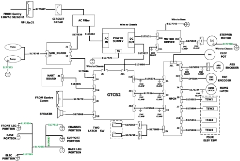
The following is the Lite Table block diagram.
Illustration 2: Lite Table Block Diagram
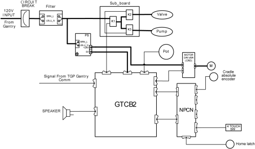
Control of this cradle drive system is provided by the GTCB and stepping motor driver. The GTCB generates the IN/OUT drive pulse and sends torque control signals to the stepping motor driver. The stepping motor driver drives the cradle stepping motor. The motor turns a drive roller at the front of the table on which the cradle rests via drive belts, thus causing the cradle to move.
Illustration 3: Cradle Drive
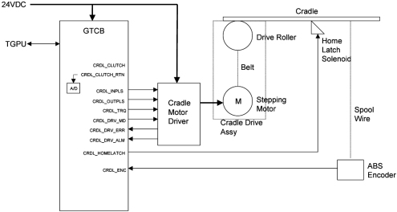
Stepping motor driver drives the stepping motor by the push-pull pulse from the GTCB. The speed of driving depends on the frequency of the pulse. Stepping motor driver also controls the current to the stepping motor according to the command from the GTCB to control the torque. Stepping motor driver has 8 steps of the volume of the current to the stepping motor, depending on the level of the torque control signal from firmware.
The cradle uses a spool wire; Multi-turn Absolute. It sends the position data in Grey code via RS485 serial interface.
The hydraulic system is used to rise and to lower the Table. Table is risen by the oil flow activated by hydraulic pump and lowered by gravity.Illustration 4 shows the Table Hydraulic System.
Illustration 4: Table Up/Down Hydraulic System
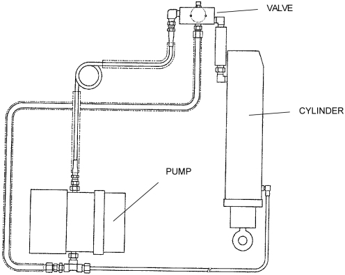
Illustration 5 is the Table Hydraulic System represented by the diagram. The function of the main components in the diagram of the Illustration 5is as follows:
Check valve (A and C) - permit only one direction oil flow (indicated by arrow).
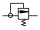
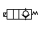
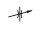
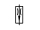
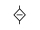
Illustration 5: Table Up/Down Hydraulic System - Diagram
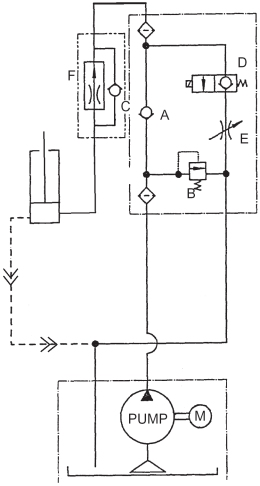
The oil flow and function of each components of the hydraulic system for table up, table down and for overload safety response is as follows:
Table Up
The oil flow during table up movement and function of each components is as follows:
The hydraulic pump injects oil to the hose to raise the table.
In normal operation, Bleed-off Valve (B) remains closed, so oil flows through the Check Valve (A).
At this time, Solenoid Valve (D) is closed so that not to permit oil drain. Check Valve (C) will not permit flowing either, so that the oil is injected to the cylinder to perform table up movement.
A small amount of oil drains by the oil return hose.
Table Down
Sequence of the oil flow is as follows:
When the Table is to be lowered, Solenoid Valve (D) opens.
As check valve (C) does not permit the oil flow backward, the oil from the cylinder flows through the Solenoid Valve.
Flow Adjuster (E) is to manually adjust the oil flow, in other word, the speed of the Table lowering.
Overload Safety Response
The Table Hydraulic System has the safety mechanism to protect the motor from overheating when very heavy weight is on the Cradle. This also occurs when oil hoses are clogged and high pressure occurs in the hoses.
When there is a weight over the cradle, it forces the oil to flow in direction against the pump.
The pump tends to push oil with higher power to permit Table up movement.
These two power encounters at the check valve (A).
This makes difficult the oil flow to the cylinder, but pump motor continues to rotate, so that the high pressure occurs at the point indicated by in the Illustration 5.
When it occurs, the high pressure opens the Bleed-off Valve (G) and oil returns to the pump.
The GTCB measures elevation height by reading the digital-converted value of the voltage from the Elevation Potentiometer. When the table is moving up or down, the A/D converter is sampled by the firmware. The value from the A/D converter represents the table’s position. When the specific position is ok, the firmware stops the control signal.
There are several touch switches equipped on the Lite Table to prevent a person or object to be pinched.
The Tape switches are connected through the internal 470-Ohm resister and it can detect failure of the tape switch (open mode) or disconnection of the cable as well as detecting contact of the table with any object.
For Service and Engineering use, the GTCB provides some switches as shown below.
Illustration 6: Service Switches and relative LEDs
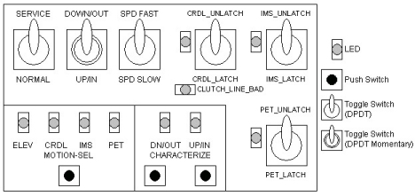
Illustration 7: Service Switch Block Diagram
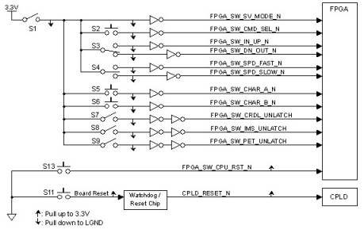
The following table shows the total switches of the GTCB.
Table 1: GTCB Switches
| SW # | Description | Input Signal | Type of Switch |
| S1 | Service Mode | SW_SVC_MODE_N | DTDP Toggle |
| S2 | Command Select | SW_CMD_SEL_N | Push Button |
| S3 | Service UP-IN / DOWN-OUT | SW_SVC_UP_IN_N | DTDP Toggle(Momentary) |
| SW_SVC_DN_OUT_N | |||
| S4 | Service Speed Control | SW_SPD_FAST_N | DTDP Toggle |
| SW_SPD_SLOW_N | |||
| S5 | Characterize 1 | SW_CHAR1_N | Push Button |
| S6 | Characterize 2 | SW_CHAR2_N | Push Button |
| S7 | Service Cradle Unlatch | SW_SVC_CRDL_UNLATCH | DTDP Toggle |
| S8 | Service IMS Unlatch | SW_SVC_IMS_UNLATCH | DTDP Toggle |
| S9 | Service PET Unlatch | SW_SVC_PET_UNLATCH | DTDP Toggle |
| S11 | Board Reset | SW_BRD_RST (to reset / watchdog IC)WDT_ENBL = “L” (Peripheral Device) | Push-Button |
| S13 | CPU Reset | SW_CPU_RESET_N | Push-Button |
The following table shows function of each switch or signal.
Table 2: Switch Function
| S1 SERVICE MODE | ||||
| Position | SW_SVC_MODE_N | Description | ||
| SERVICE | L | The board is in Service Mode, allowing for service functions. | ||
| NORMAL | H | The board is in the Normal Operating Mode (Only Firmware Control). | ||
| S2 COMMAND SELECT | ||||
| Position | SW_CMD_SEL_N | Description | ||
| Pushed | L | Service movement target is changed as below. | ||
| Released | H | No Motion | ||
| Target is changed as: Elevation >> Cradle >> IMS >> PET (if GTPET is mounted) >> Elevation >> | ||||
| S3 SERVICE UP-IN / DOWN-OUT | ||||
| Position | SW_SVC_UP_IN_N | SW_SVC_DN_OUT_N | Description | |
| UP/IN | L | H | Target function moves upward or inward. | |
| None | H | H | No Motion | |
| DN/OUT | H | L | Target function moves downward or outward. | |
| S4 SERVICE SPEED CONTROL | ||||
| Position | SW_SPD_FAST_N | SW_SPD_SLOW_N | Description | |
| FAST | L | H | Move fast | |
| SLOW | H | L | Move slowly | |
| S5 / S6 CHARACTERIZE A / B | ||||
| Position | SW_CHAR1_N | SW_CHAR2_N | Description | |
| Char A | Char B | |||
| Pushed | Pushed | L | L | Characterize the target function. |
| Pushed | Released | L | H | No Motion |
| Released | Pushed | H | L | No Motion |
| Released | Released | H | H | No Motion |
| S7 SERVICE CRADLE UNLATCH | ||||
| Position | SW_SVC_CRDL_UNLATCH | Description | ||
| UNLTACH | L | Unlatch the Cradle Clutch and Home Latch. | ||
| LATCH | H | Latch the Cradle Clutch and Home Latch. | ||
| S8 SERVICE IMS UNLATCH | ||||
| Position | SW_SVC_IMS_UNLATCH | Description | ||
| UNLTACH | L | IMS Motor Excitation OFF | ||
| LATCH | H | IMS Motor Excitation ON (Normal) | ||
| S9 SERVICE PET UNLATCH | ||||
| Position | SW_SVC_PET_UNLATCH | Description | ||
| UNLTACH | L | PET Motor Excitation OFF | ||
| LATCH | H | PET Motor Excitation ON (Normal) | ||
| S11 BOARD RESET | ||||
| Position | SW_BRD_RESET_N | Description | ||
| Pushed | L | Reset the whole board. | ||
| Pushed >> Released | L >> H | Hardware Configuration is done. | ||
| Released | H | No Motion | ||
| S13 CPU RESET | ||||
| Position | SW_CPU_RESET_N | Description | ||
| Pushed | L | Reset Program on NIOS and clear the resisters internal NIOS. | ||
| Pushed >> Released | L >> H | Run Program on NIOS with one mode selected by S104. | ||
| Released | H | No Motion | ||